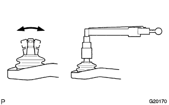

FRONT UPPER SUSPENSION ARM > INSPECTION |
| 1. INSPECT FRONT SUSPENSION UPPER ARM ASSEMBLY LH |
|  |
As shown in the illustration, flip the ball joint stud back and forth 5 times before installing the nut.
Using a torque wrench, turn the nut continuously at a rate of 3 to 5 seconds per turn and take a torque reading on the fifth turn.